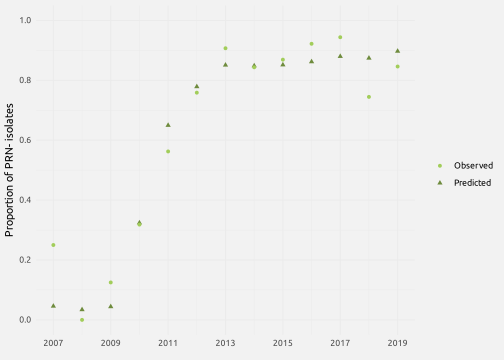
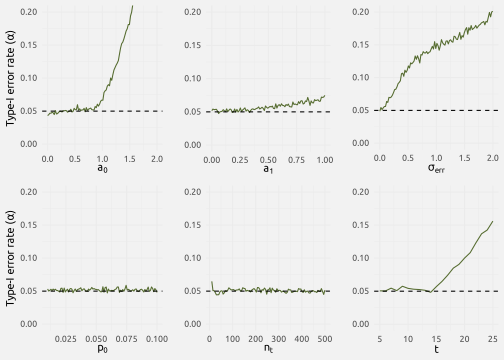
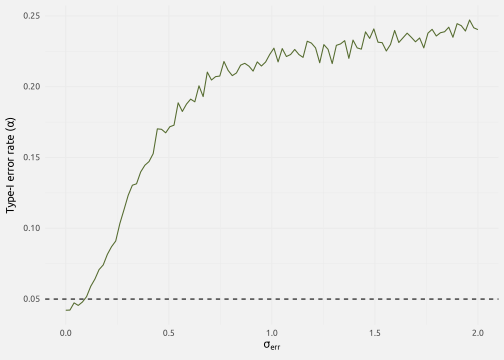
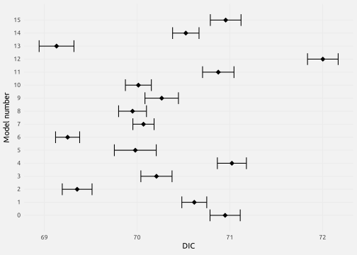
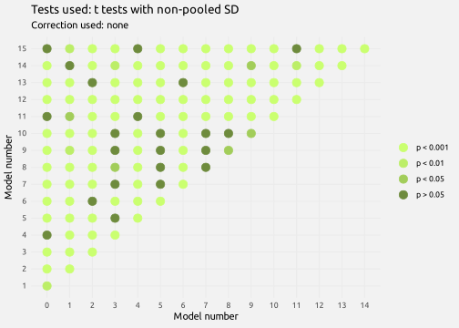
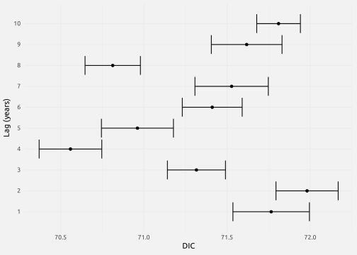
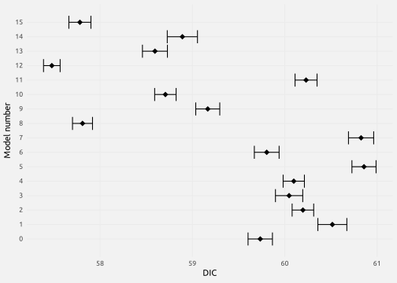
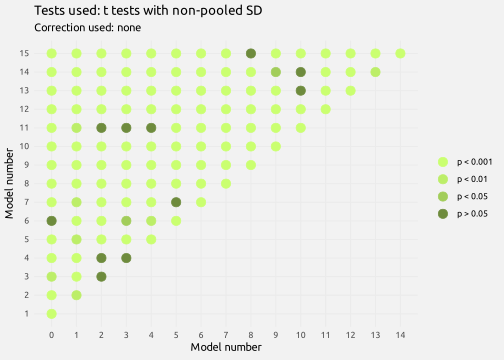
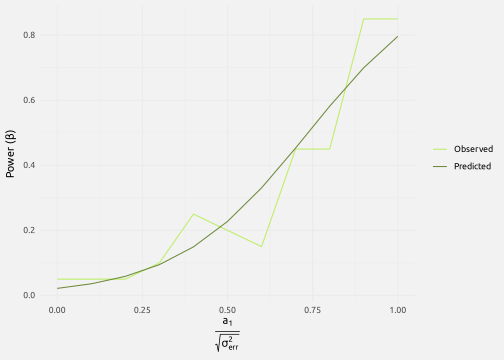
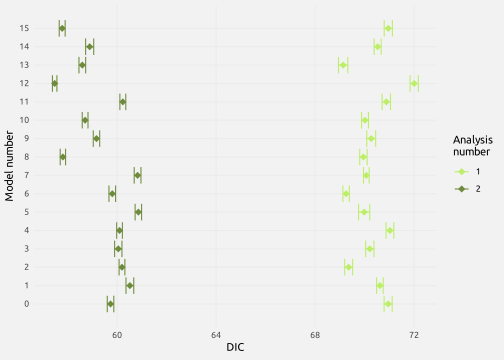

Analyzes
Introduction
Before we can start any form of analysis, we load the data-analyzes.txt file created in the “Data” section. It contains everything we need for the following analyzes.
data_analyzes <- read.table("data/data-analyzes.txt", header = T, sep = "\t")Generalized Linear Model
Analysis
The first idea in the study of our data was to use a Generalized Linear Model (GLM) to link the proportion of PRN- strains to the variables established in the “Data” part.
Let’s consider that the proportion of PRN- isolates at time \(t\) depends on the proportion of PRN- strains at time \(t-1\) and on the values of the variables at time \(t-1\). Because we study the change in a proportion as a function of variables, we must use a “logit” function to linearize our data. Thus, we can write:
\[ \Delta\log\left(\frac{p_t}{1-p_t}\right)=a_0+\sum_{v=1}^{n_v}a_vX_{t-1}^v \]
The proportion of PRN- isolates at time \(t\) is thus:
\[ \log\left(\frac{p_t}{1-p_t}\right)=\log\left(\frac{p_{t-1}}{1-p_{t-1}}\right)+\Delta\log\left(\frac{p_t}{1-p_t}\right) \]
This formula can be adapted to obtain the proportion of PRN- strains at each time step \(t\) knowing the value proportion of PRN- strains at time \(t=0\) and the values of the different variables. The complete model can thus be written:
\[ \log\left(\frac{p_t}{1-p_t}\right)=\log\left(\frac{p_0}{1-p_0}\right)+a_0t+\sum_{v=1}^{n_v}a_v\sum_{k=0}^{t-1}X_k^v \]
where \(p_t\) is the proportion of PRN- isolates at time \(t\), \(p_0\) is the proportion of PRN- isolates at time \(0\), \(a_0\) is the growth coefficient associated with time (representing the selection coefficient of PRN- isolates), \(a_v\) is the coefficient associated with variable \(v\), \(n_v\) is the number of variables included in the model, and \(X_k^v\) is the value of variable \(v\) at time \(k\).
The complete demonstration of the model can be found elsewhere.
Now, since we have four variables, \(\Delta^D\), \(\mu^D\), \(\Delta^T\) and \(\mu^T\), we can rewrite the specific model we use as:
\[ \begin{align} \log\left(\frac{p_t}{1-p_t}\right)& = \log\left(\frac{p_0}{1-p_0}\right)+a_0t \\ & +a_1\sum_{k=0}^{t-1}\Delta^D_k+a_2\sum_{k=0}^{t-1}\mu^D_k+a_3\sum_{k=0}^{t-1}\Delta^T_k+a_4\sum_{k=0}^{t-1}\mu^T_k \end{align} \]
To lead our analysis, we must calculate the cumulative sums of our variables. This is done using the following code. Note that we place a value of \(0\) at the beginning of each vector because we consider that at time \(t=0\) the variables do not explain the proportion of PRN- isolates. In other terms, the start of the invasion is different from the invasive phase.
Note that because our variables have different units and thus highly different ranges, it is a good practice to first center them. If we do not do so, the \(a_0\) coefficient estimation will be biased (while the other coefficients are not affected by this centering).
# Good way to center?
S_Delta_D = c(0, cumsum(with(data_analyzes, Delta_D[-1] - mean(Delta_D[-1]))))
S_mu_D = c(0, cumsum(with(data_analyzes, mu_D[-1] - mean(mu_D[-1]))))
S_Delta_T = c(0, cumsum(with(data_analyzes, Delta_T[-1] - mean(Delta_T[-1]))))
S_mu_T = c(0, cumsum(with(data_analyzes, mu_T[-1] - mean(mu_T[-1]))))
# Without centering
# S_Delta_D = cumsum(with(data_analyzes, Delta_D))
# S_mu_D = cumsum(with(data_analyzes, mu_D))
# S_Delta_T = cumsum(with(data_analyzes, Delta_T))
# S_mu_T = cumsum(with(data_analyzes, mu_T))
# We also create a time variable
time = 0:(nrow(data_analyzes) - 1)After this simple step, it is possible to run our model, using the simple glm() function from R. The summary of the model is printed below.
model_glm <- glm(as.matrix(data_analyzes[, 2:3]) ~ time + S_Delta_D + S_mu_D + S_Delta_T + S_mu_T,
family = "binomial")
summary(model_glm)
Call:
glm(formula = as.matrix(data_analyzes[, 2:3]) ~ time + S_Delta_D +
S_mu_D + S_Delta_T + S_mu_T, family = "binomial")
Deviance Residuals:
Min 1Q Median 3Q Max
-1.7974 -0.6068 0.2750 0.9636 1.4437
Coefficients:
Estimate Std. Error z value Pr(>|z|)
(Intercept) -1.32765 0.70645 -1.879 0.060199 .
time 0.16962 0.06966 2.435 0.014894 *
S_Delta_D -0.04436 0.01209 -3.668 0.000244 ***
S_mu_D -0.06385 0.02386 -2.676 0.007460 **
S_Delta_T 0.46250 0.09899 4.672 2.98e-06 ***
S_mu_T 2.03424 0.27086 7.510 5.90e-14 ***
---
Signif. codes: 0 '***' 0.001 '**' 0.01 '*' 0.05 '.' 0.1 ' ' 1
(Dispersion parameter for binomial family taken to be 1)
Null deviance: 167.250 on 12 degrees of freedom
Residual deviance: 12.718 on 7 degrees of freedom
AIC: 71.692
Number of Fisher Scoring iterations: 4The major elements of the summary can be interpreted this way:
(Intercept)is the logit of the proportion of PRN- isolates estimated at time \(t=0\). Since it has a value of \(-1.328\), the corresponding value is \(p_0=0.21\).timeis the coefficient associated with time, i.e., the change in the proportion of PRN- isolates each year. It represents the selection coefficient of this invasive strain.S_Delta_D,S_mu_D,S_Delta_T, andS_mu_Tare the coefficients associated with the variables \(\Delta^D\), \(\mu^D\), \(\Delta^T\) and \(\mu^T\), respectively.
We can see that, according to this summary, that all coefficients are estimated different from \(0\), except the \(p_0\). Now, what we want is to compare this model, which includes all the variables, to sub-models missing one or multiple variables, to select the best one.
Model selection
To compare the sub-models, we use the MuMIn package. The criterion which will be used to select the best model is the QAICc, whose formula is given below.
\[ QAICc=-2\frac{\ln\left(\mathcal{L}\right)}{\hat{c}}+2K+\frac{2K\left(K+1\right)}{n-K-1} \]
with \(\mathcal{L}\) the likelihood function, \(\hat{c}\) the overdispersion factor, \(K\) the number of parameters and \(n\) the size of the sample. The formula of the overdispersion factor is:
\[ \hat{c}=\frac{\sum\left(\frac{\left(O_S+T_S\right)^2}{T_S}+\frac{\left(O_E+T_E\right)^2}{T_E}\right)}{n-K-1} \]
with \(O_S\) (respectively \(O_E\)) the observed number of successes (respectively failures), \(T_S\) (respectively \(T_E\)) the predicted number of successes (respectively failures), \(n\) the size of the sample and \(K\) the number of parameters. Here, we define an success as PRN- and failure as PRN+.
Note: In our example, there are six parameters in the model (four variables, plus time, plus the intercept) plus one, the overdispersion factor. Thus, we have \(K=7\). Moreover, we have \(n=\) because the sample size here corresponds to the number of years studied, not to the number of isolates per year.
The code chunk below compare the models and rank them according to the corresponding QAICc. The overdispersion factor is obtained using the performance package.
options("na.action" = "na.fail") # For the next command to work
table_QAICc <- dredge(model_glm, fixed = "time", rank = "QAICc",
chat = check_overdispersion(model_glm)$dispersion_ratio)The table below shows the results of the model selection.
| \(p_0\) | \(a_0\) | \(a_1\) | \(a_2\) | \(a_3\) | \(a_4\) | QAICc |
|---|---|---|---|---|---|---|
| 0.046 | 0.434 | 1.218 | 59.160 | |||
| 0.231 | 0.262 | 0.179 | 1.594 | 60.328 | ||
| 0.211 | 0.241 | -0.017 | 0.322 | 1.665 | 63.865 | |
| 0.035 | 0.453 | -0.002 | 1.205 | 64.621 | ||
| 0.043 | 0.441 | 0.003 | 1.204 | 64.700 | ||
| 0.224 | 0.270 | 0.011 | 0.193 | 1.549 | 67.332 | |
| 0.210 | 0.170 | -0.044 | -0.064 | 0.462 | 2.034 | 70.306 |
| 0.033 | 0.456 | -0.004 | -0.005 | 1.219 | 72.024 | |
| 0.198 | 0.361 | 0.035 | 81.638 | |||
| 0.141 | 0.369 | -0.012 | 84.435 | |||
| 0.097 | 0.426 | -0.127 | 84.897 | |||
| 0.397 | 0.280 | 85.691 | ||||
| 0.125 | 0.405 | 0.029 | -0.048 | 86.766 | ||
| 0.216 | 0.356 | 0.002 | 0.038 | 87.175 | ||
| 0.097 | 0.411 | -0.008 | -0.063 | 89.534 | ||
| 0.140 | 0.415 | 0.011 | 0.044 | -0.094 | 93.552 |
We can see that the best model, based on the QAICc, is the model with only \(\mu^T\) as an explanatory variable. We also see that all following good models include \(\mu^T\) as well. The best model can thus be written:
\[ \log\left(\frac{p_t}{1-p_t}\right)=-3.037+ 0.434t +1.218 \sum_{k=0}^{t-1}\mu^T_k \]
This means that each year the proportion of PRN- isolates increases by \(60.68 \%\), and that for each unit increase in the annual mean temperature the proportion of PRN- isolates increases by \(77.18 \%\). The plot below shows how well the predicted values from the best model fit the observed values.
Show the code
best_model <- glm(as.matrix(data_analyzes[, 2:3]) ~ time + S_mu_T, family = "binomial")
pred = predict(best_model, type = "response")
obs = as.matrix(data_analyzes[, 2]) /
(as.matrix(data_analyzes[, 2]) + as.matrix(data_analyzes[, 3]))
data_pred <- data.frame(prop = c(pred, obs),
year = data_analyzes$year,
type = rep(c("pred", "obs"), each = nrow(data_analyzes)))
ggplot(data_pred) +
geom_point(aes(x = year, y = prop, color = type, shape = type)) +
scale_color_manual(values = paste0("darkolivegreen", 3:4),
labels = c("Observed", "Predicted")) +
scale_shape_manual(values = c(16, 17),
labels = c("Observed", "Predicted")) +
scale_x_continuous(breaks = seq(min(data_pred$year), max(data_pred$year), 2)) +
scale_y_continuous(breaks = seq(0, 1, .2)) +
labs(x = element_blank(), y = "Proportion of PRN- isolates",
color = element_blank(), shape = element_blank()) +
coord_cartesian(ylim = c(0, 1)) +
theme_minimal(base_family = "Ubuntu")
Robustness test
After working on this GLM, we decided to run a robustness analysis to check how the random variation in our data could impact the output of the analysis. Indeed, when we presented the model, there was a missing. The true model should be written in this form:
\[ \Delta\log\left(\frac{p_t}{1-p_t}\right)=a_0+\sum_{v=1}^{n_v}a_vX_{t-1}^v+\varepsilon_{t-1} \]
with the term \(\varepsilon_{t-1}\) being the random error, i.e., an element randomly distributed according to a normal law of mean \(0\) and standard deviation \(\sigma_{err}\). The problem is that this element is not correctly taken into account in the GLM. Indeed, in the GLM this random error should accumulate with time but it is treated as if it was not. Thus, the main goal of this part is to check if the existence of this random error creates a problem in our analysis.
To do so, we encode a simulator in the form of an R function called robustness. It follows these steps:
- The simulator generates \(t-1\) (\(t\) being passed in the function as an argument) values for an explanatory variable \(X_t\) distributed following normal distribution: \(X_t\sim\mathcal{N}\left(0,1\right)\).
- It generates the values of \(\Delta\log\left(\frac{p_t}{1-p_t}\right)\) using \(X_t\) and values of \(a_0\), \(a_1\) and \(\sigma_{err}\) passed as arguments in the function.
- It calculates the values of \(\log\left(\frac{p_t}{1-p_t}\right)\) using the previously generated values of \(\Delta\log\left(\frac{p_t}{1-p_t}\right)\) and a value for \(p_0\) passed as an argument in the function.
- From these, it calculates the expected values of \(p_t\).
- It draws the number of PRN- isolates isolated each year \(S_t\) using the values of \(p_t\) and the total number of isolates isolated each year \(n_t\) (passed as an argument to the function) from a binomial distribution: \(S_t\sim\mathcal{B}\left(n_t,p_t\right)\). From this it deduces the number of PRN+ isolates isolated each year \(F_t\). Note that the simulator can only accept one value for \(n_t\) (i.e., it is not possible for now to have a different number of isolates each year). Note also that if \(S_0=0\) the simulator will change it so that \(S_0=1\).
- It generates \(t-1\) values for a dummy variable \(D_t\) which is not supposed to explain the data but will be passed in the model to check on the robustness. \(D_t\) is distributed following a normal distribution: \(D_t\sim\mathcal{N}\left(0,1\right)\).
- It calculates the cumulative sums of \(X_t\) and \(D_t\) which will be used in the following GLMs, and it creates a \(t\) vector to be used in the model as well.
- It runs two GLMs: one with \(D_t\) and \(X_t\), one with only \(X_t\).
- It calculates and return the value of an ANODEV comparing these two GLMs.
robustness <- function(time, a0, a1, s_alea, n_ind, p0) {
# Step 1
X = rnorm(time - 1, 0, 1)
# Step 2
delogit = a0 + a1 * X + rnorm(time - 1, 0, s_alea)
# Step 3
logit = c(0, cumsum(delogit)) + log(p0 / (1 - p0))
# Step 4
p = exp(logit) / (1 + exp(logit))
# Step 5
n = rep(n_ind, time)
success = rbinom(time, n, p)
success[1] = max(success[1], 1)
failure = n_ind - success
# Step 6
dummy = rnorm(time - 1, 0, 1)
# Step 7
c_X = c(0, cumsum(X))
c_dummy = c(0, cumsum(dummy))
t = 1:time
# Step 8
model1 = glm(cbind(success, failure) ~ c_X + c_dummy + t, family = "binomial")
model2 = glm(cbind(success, failure) ~ c_X + t, family = "binomial")
# Step 9
result <- anova(model1, model2, test = "F", dispersion = check_overdispersion(model1)$dispersion_ratio)
return(result$`Pr(>F)`[2])
}The main goal of this analysis is to check if the parameter \(\sigma_{err}\), called s_alea in the code, has an impact on the robustness of the model. It is also possible to check the impact of the other parameters.
To run our analysis, we start by setting a seed (for reproducibility, but note that the results shown here may not have been produced using this seed).
set.seed(1234)Then we must define the number of simulations we will run on each value of the parameters. The higher the better, but also the higher the longer it will take to run.
n_sim = 1e4We also define a “precision” value, corresponding to the inverse of the number of values tested per parameter.
precision = .01After that, we define the values that the simulator will test for the different parameters that can be changed (i.e., the arguments of the function).
list_values = list()
list_values$time = seq(5, 25, 1)
list_values$a0 = seq(0, 2, length = 1 / precision)
list_values$a1 = seq(0, 1, length = 1 / precision)
list_values$p0 = seq(.01, .1, length = 1 / precision)
list_values$n_ind = round(seq(10, 500, length = 1 / precision))
list_values$s_alea = seq(0, 3, length = 1 / precision)We create a list which will contain the results of our simulations and a vector containing the names of the different parameters, that will be used by the simulator.
data_alpha = list()
parameters = c("a0", "a1", "s_alea", "p0", "n_ind", "time")We have 6 parameters. To save a maximum of computing time, the best practice is to parallelize our simulations using the doParallel package.
The simulations work like this: each processor in the cluster will work on one parameter. For each parameter, it will run n_sim (\(10^{4}\)) simulations for 1 / precision (\(100\)) values of the parameters. Then for each value of each parameter it will count the number of times were the p-value, as returned bu
# We create the cluster to parallelize the simulations
cl = makeCluster(min(detectCores() - 1, length(parameters)))
registerDoParallel(cl)
# We run the simulations
foreach(param = parameters,
.packages = "performance") %dopar% {
alpha_vec = numeric()
for (x in list_values[[param]]) {
xx <- replicate(n_sim, robustness(time = ifelse(param == "time", x, 13),
a0 = ifelse(param == "a0", x, .8),
a1 = ifelse(param == "a1", x, .1),
s_alea = ifelse(param == "s_alea", x, 0),
n_ind = ifelse(param == "n_ind", x, 100),
p0 = ifelse(param == "p0", x, .01)))
alpha = length(xx[xx < 0.05]) / n_sim
alpha_vec = c(alpha_vec, alpha)
}
result = data.frame(alpha = alpha_vec,
values = list_values[[param]])
return(result)
} -> data_alpha
# We close the cluster
stopCluster(cl)
# We save the results
for (x in 1:length(data_alpha)) {
write.table(data_alpha[[x]],
file = paste0("data/simu-robustness/var_glm_", parameters[x], ".txt"),
quote = F, sep = "\t", row.names = F)
}On the figure below, we show the results of the simulations. We can see that when \(a_0\), \(a_1\) or \(t\) increases beyond a threshold, the type-I error rate increases. This can be explained by the fact that when these values increases there are a lot of observed values near $1$, which is not well managed by the GLM approach. We can also see that the proportion of PRN- isolates at \(t=0\) (\(p_0\)) and the total number of isolates per year (\(n_t\)) do not have an incidence on the type-I error rate.
Now, the most interesting part is \(\sigma_{err}\). We can see that the type-I error rate increases sharply as soon as \(\sigma_{err}\) becomes superior to \(0\). This means that our method to analyze the data is not robust and thus that another one must be found.
Show the code
x_lab = c("a0" = bquote(a[0]),
"a1" = bquote(a[1]),
"s_alea" = bquote(sigma[err]),
"p0" = bquote(p[0]),
"n_ind" = bquote(n[t]),
"time" = bquote(t))
list_of_simus <- list()
list_of_plots <- list()
for (param in parameters) {
list_of_simus[[param]] <- read.table(paste0("data/simus-robustness/var_glm_", param, ".txt"),
header = T, sep = "\t")
ggplot(list_of_simus[[param]]) +
geom_line(aes(x = values, y = alpha), color = "darkolivegreen") +
geom_hline(yintercept = .05, linetype = "dashed") +
labs(x = x_lab[[param]],
y = ifelse(param %in% c("a0", "p0"),
expression(paste("Type-I error rate (", alpha, ")")),
" ")) +
coord_cartesian(ylim = c(0, .2)) +
theme_minimal(base_family = "Ubuntu") -> list_of_plots[[param]]
}
ggarrange(plotlist = list_of_plots)
Generalized Linear Mixed Model
After this first failure, we tried to consider the time as both a random qualitative variable and a fixed continuous variable in the model, making it a Generalized Linear Mixed Model (GLMM). We thus defined a new function, robustness_glmm(), analogous to robustness(), to check if this approach was more robust than the simple GLM one. Since GLMMs cannot be compared using the ANODEV method, this new function returns the \(\chi^2\) value of the anova(model1, model2) function instead of the \(F\) statistic of the ANODEV.
Also, the glmer() function from the lme4 package returns an error if the algorithm used to fit the model does not converge in the maximal number of iterations allowed. To solve this problem and prevent the script from returning an error and thus stopping, I used the function try(), and the function simply returns NA if the glmer() function returned an error.
robustness_glmm <- function(time, a0, a1, s_alea, n_ind, p0) {
repeat {
X = rnorm(time - 1, 0, 1)
delogit = a0 + a1 * X + rnorm(time - 1, 0, s_alea)
logit = c(0, cumsum(delogit)) + log(p0 / (1 - p0))
p = exp(logit) / (1 + exp(logit))
n = rep(n_ind, time)
success = rbinom(time, n, p)
success[1] = max(success[1], 1)
failure = n_ind - success
dummy = rnorm(time - 1, 0, 1)
c_X = c(0, cumsum(X))
c_dummy = c(0, cumsum(dummy))
t = 1:time
suppressMessages({
model1 = try(glmer(cbind(success, failure) ~ c_X + c_dummy + t + (1 | as.factor(t)),
family = "binomial"), silent = T)
model2 = try(glmer(cbind(success, failure) ~ c_X + t + (1 | as.factor(t)),
family = "binomial"), silent = T)
})
if (class(model1) != "try-error" & class(model2) != "try-error") {
anova12 = anova(model1, model2)
print(s_alea)
break
}
}
return(anova12$`Pr(>Chisq)`[2])
}We run the simulations on s_alea only, as it is pretty long to run (36h with the current parameters).
list_values = list()
n_sim = 1e4
precision = 100
list_values$s_alea = seq(0, 2, length = 1 / precision)
data_alpha = list()
parameters = "s_alea"
cl = makeCluster(min(detectCores() - 1, length(parameters)))
registerDoParallel(cl)
foreach(param = parameters,
.packages = c("performance", "lme4")) %dopar% {
alpha_vec = numeric()
for (x in list_values[[param]]) {
xx <- replicate(n_sim, robustness_glmm(time = ifelse(param == "time", x, 13),
a0 = ifelse(param == "a0", x, .8),
a1 = ifelse(param == "a1", x, .1),
s_alea = ifelse(param == "s_alea", x, 0),
n_ind = ifelse(param == "n_ind", x, 100),
p0 = ifelse(param == "p0", x, .01)))
alpha = length(xx[xx < 0.05]) / n_sim
alpha_vec = c(alpha_vec, alpha)
}
result = data.frame(alpha = alpha_vec,
values = list_values[[param]])
return(result)
}
# We close the cluster
stopCluster(cl)
# We save the results
for (x in 1:length(data_alpha)) {
write.table(data_alpha[[x]],
file = paste0("data/simus-robustness/var-glmm-", parameters[x], ".txt"),
quote = F, sep = "\t", row.names = F)
}The plot below shows that the alpha risk rises sharply when the error increases, as we saw in the previous GLM approach. This means that the GLMM approach is not any more robust and thus that we need a new approach, a Bayesian one. This new approach should be able to deal with \(\sigma_{err}\).
Show the code
data_robustness <- read.table("data/simus-robustness/var-glmm-s_alea.txt", header = T, sep = "\t")
ggplot(data_robustness) +
geom_line(aes(x = values, y = alpha), color = "darkolivegreen") +
geom_hline(yintercept = 0.05, linetype = "dashed") +
labs(x = bquote(sigma[err]), y = bquote("Type-I error rate ("*alpha*")")) +
theme_minimal(base_family = "Ubuntu")
Bayesian analysis 1
/!\ Il y a peut-être eu des erreurs dans les simulations (le fichier data-analyzes n’était possiblement pas correct au niveau des valeurs des cofacteurs) donc il faudra relancer les simulations à l’occasion !! (pour les MCMCs)
Model without density-dependence
Structure of the model
The model is written in the BUGS language, and analysed using the JAGS program. At the beginning of this part of the study. I used the jagsUI R package to communicate between JAGS and R.
Below is the model we used.
model <- readLines("files/model.bugs")
cat(model, sep = "\n")model {
p[1] ~ dunif(0, 1)
logitp[1] <- log(p[1] / (1 - p[1]))
S[1] ~ dbin(p[1], n[1])
for (t in 2:(tmax)) {
deltalogitp[t] <-
a[1] +
a[2] * X1[t - 1] +
a[3] * X2[t - 1] +
a[4] * X3[t - 1] +
a[5] * X4[t - 1] +
epsilon[t - 1]
logitp[t] <- logitp[t - 1] + deltalogitp[t]
p[t] <- exp(logitp[t]) / (1 + exp(logitp[t]))
epsilon[t - 1] ~ dnorm(0, 1 / (sigma_err ** 2))
S[t] ~ dbin(p[t], n[t])
}
mu[1] ~ dunif(-100, 100) # mu of Intercept
mu[2] ~ dunif(-100, 100) # mu of Slope X1
mu[3] ~ dunif(-100, 100) # mu of Slope X2
mu[4] ~ dunif(-100, 100) # mu of Slope X3
mu[5] ~ dunif(-100, 100) # mu of Slope X4
sigma[1] ~ dunif(0, 50) # sd of Intercept
sigma[2] ~ dunif(0, 50) # sd of Slope X1
sigma[3] ~ dunif(0, 50) # sd of Slope X2
sigma[4] ~ dunif(0, 50) # sd of Slope X3
sigma[5] ~ dunif(0, 50) # sd of Slope X4
sigma_err ~ dunif(0, 50) # sd of error
a[1] ~ dnorm(mu[1], 1 / (sigma[1] ** 2)) # coeff Intercept
a[2] ~ dnorm(mu[2], 1 / (sigma[2] ** 2)) # coeff Slope X1
a[3] ~ dnorm(mu[3], 1 / (sigma[3] ** 2)) # coeff Slope X2
a[4] ~ dnorm(mu[4], 1 / (sigma[4] ** 2)) # coeff Slope X3
a[5] ~ dnorm(mu[5], 1 / (sigma[5] ** 2)) # coeff Slope X4
}The model is composed of nodes, and these nodes can be divided into two categories: deterministic nodes (indicated by the symbol <-) and stochastic nodes (indicated by the symbol ~). A deterministic node means that the value of the node is attributed and thus, known, while a stochastic node means that the value fo the node is taken from a given probability distribution.
Let’s explain how the model works. Since it is written in BUGS language, it is not important in which order the elements of the model are given, so the order shown below does not correspond to any real order.
The model draws the value of \(p_0\) from a uniform distribution (\(p_0\sim\mathcal{U}\left(0,1\right)\)). From this it calculates \(\log\left(\frac{p_0}{1-p_0}\right)\) and draws the number of observed PRN- isolates at time $t=0$, \(S_0\) (\(S_0\sim\mathcal{B}\left(p_0,n_0\right)\)).
The model draws the values of \(a_x, x\in\left(0, 1… 4\right)\) from normal distributions of mean \(\mu_x\) and standard deviation \(\sigma_x\) (\(a_x\sim\mathcal{N}\left(\mu_x, \sigma_x\right)\)). \(\mu_x\) and \(\sigma_x\) are themselves drawn from uniform distributions with arbitrary values (\(p_0\sim\mathcal{U}\left(-100,100\right)\) and \(\sigma_x\sim\mathcal{U}\left(0,50\right)\)). It also draws the standard deviation of the error, \(\sigma_{err}\) (\(\sigma_err\sim\mathcal{U}\left(0,50\right)\)).
The model calculates, for all \(t>0\), the value of \(\Delta\log\left(\frac{p_t}{1-p_t}\right)\), the value of \(\log\left(\frac{p_t}{1-p_t}\right)\) (see below), the value of \(p_t\), and it draws \(S_t\) from a binomial distribution (\(S_t\sim\mathcal{B}\left(p_t, n_t\right)\)). It also draws the error \(\varepsilon_t\) from a normal distribution (\(\varepsilon_t\sim\mathcal{N}\left(0, \sigma_{err}\right)\)).
\[ \log\left(\frac{p_t}{1-p_t}\right)=\log\left(\frac{p_{t-1}}{1-p_{t-1}}\right)+\Delta\log\left(\frac{p_t}{1-p_t}\right) \]
with
\[ \Delta\log\left(\frac{p_t}{1-p_t}\right)=a_0+a_1+X^1_{t-1}+a_2+X^2_{t-1}+a_3+X^3_{t-1}+a_4+X^4_{t-1}+\varepsilon_{t-1} \]
and, in our particular case:
\[ \begin{align} & X^1=\Delta^D \\ & X^2=\mu^D \\ & X^3=\Delta^T \\ & X^4=\mu^T \end{align} \]
Note that in BUGS language the normal distribution does not take in entry the standard deviation but the precision \(p\), with \(p=\frac{1}{\sigma_{err}^2}\).
The table below recapitulates all the nodes in the model, their nature, and what they represent.
| Node | Nature | Definition |
|---|---|---|
p[1] |
Stochastic | Expected proportion of PRN- isolates at time \(t=0\) |
logitp[1] |
Deterministic | Value of \(\log\left(\frac{p_0}{1-p_0}\right)\) calculated from p[1] |
S[1] |
Stochastic | Number of PRN- strains at time \(t=0\) |
mu[1] to mu[5] |
Stochastic | Means of the normal distribution from which a[1] to a[5] will be drawn |
sigma[1] to sigma[5] |
Stochastic | Standard deviations of the normal distributions from which a[1] to a[5] will be drawn |
sigma_err |
Stochastic | Standard deviation of the normal distribution from which epsilon will be drawn |
a[1] |
Stochastic | Intercept \(a_0\) |
a[2] to a[5] |
Stochastic | Slopes \(a_1\) to \(a_4\) |
deltalogitp[t] |
Deterministic | Difference between \(\log\left(\frac{p_{t-1}}{1-p_{t-1}}\right)\) and \(\log\left(\frac{p_t}{1-p_t}\right)\), calculated from a[1] to a[5], X1[t - 1] to X4[t - 1] and epsilon[t - 1] |
logitp[t] |
Deterministic | Value of \(\log\left(\frac{p_t}{1-p_t}\right)\) calculated from logitp[t - 1] and deltalogitp[t] |
p[t] |
Deterministic | Expected proportion of PRN- strains at time \(t\), calculated from logitp[t] |
epsilon[t - 1] |
Stochastic | Error \(\varepsilon\) at each time step |
S[t] |
Stochastic | Number of PRN- isolates at time \(t\) |
Divergence Information Criterion
One of the two steps when the model was ready was to select which variables should be kept in the analysis. For the GLM approach, we used the QAICc criterion to pick the best model. A Bayesian equivalent is the DIC. Because the DIC is calculated using the outputs of the MCMCs, its value changes each time a new simulation runs. Thus, it is better to establish a confidence interval around the punctual estimation for a DIC.
Values of the parameters
The values of the parameters are estimated using the posteriori distributions of the MCMCs. Note that jagsUI allows to save any node in the output, but we will mostly focus of the values of \(a_x\) and \(\sigma_{err}\).
Simulations
Before to run the simulations, we start by initializing some stuff.
# We create a log file to keep track of the progress of the simulations
cat(file = "logs/mcmc.log")
# We set a seed for reproducbility
set.seed(1234)
# We set the parameters used to run the MCMCs
n.adpt = 1e3
n.iter = 1e6
n.thin = 1e3 # High number because of high autocorrelation
n.burn = 1e4
n.chns = 3
# We fix n and success, needed for the simulations
n = apply(data_analyzes[, 2:3], 1, sum)
success = data_analyzes[, 2]To run the simulations for all the models without having to change the BUGS file, we use a little trick where, globally, all 16 possible models are given a number between 0 and 15. This number is then converted to its binary value reduced to four digits (e.g., 0 becomes 0000, 4 becomes 0100, etc.). This value is converted to a vector \(V\) of length four, with each element being one of the digits. Finally, we recalculate the values of \(X^i, i\in\left(1, 2, 3, 4\right)\) with the following formula:
\[ \begin{pmatrix} X^{1\star} \\ X^{2\star} \\ X^{3\star} \\ X^{4\star} \end{pmatrix}_t = V \odot \begin{pmatrix} X^1 \\ X^2 \\ X^3 \\ X^4 \end{pmatrix}_t \]
Let’s take an example. The model with only \(\mu_D\) and \(\mu_T\) will have the number 12 associated, which becomes 0101 in binary. We thus have:
\[ \begin{pmatrix} X^{1\star} \\ X^{2\star} \\ X^{3\star} \\ X^{4\star} \end{pmatrix}_t = \begin{pmatrix} 0 \\ 1 \\ 0 \\ 1 \end{pmatrix} \odot \begin{pmatrix} X^1 \\ X^2 \\ X^3 \\ X^4 \end{pmatrix}_t = \begin{pmatrix} 0 \\ X^2 \\ 0 \\ X^4 \end{pmatrix}_t \]
It is now possible to run the simulations. For each simulation, we have 3 chains, and for each chain we keep 1000 iterations. We run 20 simulations for each model, and there are 16 models, so in total we will have 320 simulations, 960 chains, 9.6^{5} iterations.
A simulation takes about 3 minutes to run, so in serial we would need 16 hours to run all the simulations. To gain time, we run the simulations in parallel. The ideal is to have a system with 16 cores so that each core can work on the simulations for one particular model.
The code below starts, runs, and save the simulations. Here is what is happening inside the foreach() loop:
- The values of the \(X^{i\star}\) for the model are calculated for the model used.
- The files in which the outputs will be stored are created. It is faster to do it this way rather than storing the outputs in R data frames.
- It runs the 20 simulations for the model with these steps:
In a
while()loop, it runs one simulation using the appropriate inputs and returns the desired outputs.It writes in the log file the model number, the repetition number, the trial number and the time at which the simulation stopped.
It checks if the chains in the simulation converged. If not, it discards the simulation and tries again. If it converged, it exits the
while()loop.It extracts the values of interest from the
out_jagsobject.It saves them in the files previously created.
n_cores <- detectCores()
registerDoParallel(cl <- makeCluster(min(n_cores, 2 ** 4)))
foreach(val = 1:2**4 - 1,
.packages = "jagsUI") %dopar% {
# Step 1
X1 = as.integer(intToBits(val))[1] * with(data_analyzes[-1, ], (Delta_D - mean(Delta_D)))
X2 = as.integer(intToBits(val))[2] * with(data_analyzes[-1, ], (mu_D - mean(mu_D)))
X3 = as.integer(intToBits(val))[3] * with(data_analyzes[-1, ], (Delta_T - mean(Delta_T)))
X4 = as.integer(intToBits(val))[4] * with(data_analyzes[-1, ], (mu_T - mean(mu_T)))
# Step 2
file.create(paste0("data/posteriori-all-models-a/model", val, ".txt"))
file.create(paste0("data/posteriori-all-models-sigma/model", val, ".txt"))
file.create(paste0("data/dic-all-models/model", val, ".txt"))
# Step 3
for (rep in 1:20) {
converged = FALSE
trial = 0
while (converged == FALSE) {
trial = trial + 1
# Step 3.1
out_jags = jags(data = list(tmax = length(n), X1 = X1, X2 = X2, X3 = X3, X4 = X4, n = n, S = success),
n.adapt = n.adpt, n.burnin = n.burn, n.iter = n.iter + n.burn, n.chains = n.chns, n.thin = n.thin,
model.file = "files/model.bugs",
parameters.to.save = c("a", "sigma_err"))
# Step 3.2
write(paste0("Model N°", val, ", repetition N°", rep, ", trial N°", trial, " | ", Sys.time()),
"logs/mcmc.log", append = T)
# Step 3.3
ifelse(unlist(out_jags$Rhat) < 1.1, converged <- TRUE, converged <- FALSE)
}
# Step 3.4
DIC = data.frame(val, rep, out_jags$DIC)
posteriori_a = data.frame(val, rep, out_jags$sims.list$a)
posteriori_sigma = data.frame(val, rep, out_jags$sims.list$sigma_err)
# Step 3.5
write.table(DIC, file = paste0("data/dic-all-models/model", val, ".txt"),
append = T, col.names = F, quote = F, sep = "\t", row.names = F)
write.table(posteriori_a, file = paste0("data/posteriori-all-models-a/model", val, ".txt"),
append = T, col.names = F, quote = F, sep = "\t", row.names = F)
write.table(posteriori_sigma, file = paste0("data/posteriori-all-models-sigma/model", val, ".txt"),
append = T, col.names = F, quote = F, sep = "\t", row.names = F)
}
}
stopCluster(cl)Visualization
It is now possible to visualize the outputs of the simulations. The first step is to aggregate the different files into bigger files to make them more practical to use. We also add
cat("model\trep\ta0\ta1\ta2\ta3\ta4\n", file = "data/posteriori-all-models-a.txt")
cat("model\trep\tsigma\n", file = "data/posteriori-all-models-sigma.txt")
cat("model\trep\tDIC\n", file = "data/dic-all-models.txt")
for (model in 0:15) {
xx <- read.table(paste0("data/posteriori-all-models-a/model", model, ".txt"))
yy <- read.table(paste0("data/posteriori-all-models-sigma/model", model, ".txt"))
zz <- read.table(paste0("data/dic-all-models/model", model, ".txt"))
write.table(xx, file = "data/posteriori-all-models-a.txt",
append = T, quote = F, sep = "\t", row.names = F, col.names = F)
write.table(yy, file = "data/posteriori-all-models-sigma.txt",
append = T, quote = F, sep = "\t", row.names = F, col.names = F)
write.table(zz, file = "data/dic-all-models.txt",
append = T, quote = F, sep = "\t", row.names = F, col.names = F)
}Show the code
post_all_s <- read.table("data/posteriori-all-models-sigma.txt", header = T, sep = "\t")
ss <- with(post_all_s, tapply(sigma, model, quantile, probs = c(.025, .975)))
for (x in 1:length(ss)) {
post_all_s$IC[post_all_s$model == as.numeric(names(ss))[x]] <-
with(post_all_s, sigma[model == names(ss)[x]] > ss[[x]][1] & sigma[model == names(ss)[x]] < ss[[x]][2])
}
keep = 100
ggplot() +
geom_point(data = post_all_s[seq(1, nrow(post_all_s), keep), ],
aes(x = sigma, y = model),
color = ifelse(post_all_s[seq(1, nrow(post_all_s), keep), ]$model %% 2,
ifelse(post_all_s[seq(1, nrow(post_all_s), keep), ]$IC,
"darkolivegreen", "darkolivegreen4"),
ifelse(post_all_s[seq(1, nrow(post_all_s), keep), ]$IC,
"darkolivegreen3", "darkolivegreen2")),
position = position_jitter(height = .4, seed = 1234)) +
geom_point(aes(x = with(post_all_s, tapply(sigma, model, median)),
y = unique(post_all_s$model)),
shape = 18, size = 3) +
scale_y_continuous(breaks = unique(post_all_s$model)) +
{if(keep != 1) ggtitle(paste0("For visualization purposes, only 1/", keep, " points have been kept"))} +
labs(x = bquote(sigma[err]), y = "Model number") +
theme_minimal(base_family = "Ubuntu") +
theme(panel.grid.minor = element_blank())
Show the code
post_all_a <- read.table("data/posteriori-all-models-a.txt", header = T, sep = "\t")
for (x in 1:4) {
xx <- with(post_all_a, tapply(get(paste0("a", x)), model, quantile, probs = c(.025, .975)))
for (y in 1:length(xx)) {
post_all_a[post_all_a$model == as.numeric(names(xx))[y], paste0("a", x, "IC")] <-
with(post_all_a, get(paste0("a", x))[model == names(xx)[y]] > xx[[y]][1] & get(paste0("a", x))[model == names(xx)[y]] < xx[[y]][2])
}
}
# To remove coeff values where irrelevant in the plot
xx = lapply(post_all_a$model, function(x) paste0((as.numeric(intToBits(x))[1:4]), collapse = ""))
post_all_a$bits <- unlist(xx)
list_of_plots = list()
list_of_data = list()
for (coeff in 1:4) {
ggplot() +
geom_point(data = cbind(post_all_a[seq(1, nrow(post_all_a), keep), ], coeff), #
aes(x = ifelse(as.numeric(substr(bits, coeff[1], coeff[1])), get(paste0("a", coeff[1])), NA),
y = model),
position = position_jitter(height = .4, seed = 1234),
color = ifelse(post_all_a[seq(1, nrow(post_all_a), keep), ]$model %% 2,
ifelse(post_all_a[seq(1, nrow(post_all_a), keep), paste0("a", coeff, "IC")],
"darkolivegreen", "darkolivegreen4"),
ifelse(post_all_a[seq(1, nrow(post_all_a), keep), paste0("a", coeff, "IC")],
"darkolivegreen3", "darkolivegreen2"))) +
geom_vline(xintercept = 0, linetype = "dashed") +
geom_point(data = data.frame(x = ifelse(as.numeric(substr(unique(post_all_a$bits), coeff, coeff)),
with(post_all_a, tapply(get(paste0("a", coeff)), model, median)),
NA),
y = unique(post_all_a$model)),
aes(x = x, y = y),
shape = 18, size = 3) +
labs(x = bquote(a[.(coeff)]), y = "Model number") +
scale_y_continuous(breaks = 0:15) +
theme_minimal(base_family = "Ubuntu") +
theme(panel.grid.minor = element_blank()) -> list_of_plots[[coeff]]
}
ggarrange(plotlist = list_of_plots)
The figure below shows the mean values of the DIC for each model. The bars indicate the 95% confidence interval associated with the values. We can see that the best model (i.e., the model with the lowest DIC) is model number 13, and the worst model is by far model number 12. Note though that while statistically significant (see next figure), the differences in the DICs are low and thus not really informative.
Show the code
dic <- read.table("data/dic-all-models.txt", header = T, sep = "\t")
dic2 <- with(dic, data.frame(dicmean = tapply(DIC, model, mean),
dicup = tapply(DIC, model, mean) + qnorm(.975) *
tapply(DIC, model, sd) / sqrt(tapply(DIC, model, length)),
diclow = tapply(DIC, model, mean) - qnorm(.975) *
tapply(DIC, model, sd) / sqrt(tapply(DIC, model, length)),
model = unique(dic$model)))
ggplot(dic2) +
geom_point(aes(x = dicmean, y = model),
shape = 18, size = 3) +
geom_errorbarh(aes(xmin = diclow, xmax = dicup, y = model)) +
scale_y_continuous(breaks = 0:15) +
labs(x = "DIC", y = "Model number") +
theme_minimal(base_family = "Ubuntu") +
theme(panel.grid.minor = element_blank())
The figure below shows the outputs of a pairwise t-test to compare the different DICs. We can see that while most DICs are significantly different from one another, some of them cannot be considered different. For example, the DIC of the best model (number 13) is not significantly different from the DIC of model number 2.
Show the code
pval <- with(dic, pairwise.t.test(x = DIC, g = model, p.adjust.method = "none", pool.sd = F))
p.value = numeric()
for (x in 1:nrow(pval$p.value)) {
p.value = c(p.value, pval$p.value[, x])
}
x1 = as.numeric(rep(rownames(pval$p.value), times = nrow(pval$p.value)))
x2 = as.numeric(rep(colnames(pval$p.value), each = nrow(pval$p.value)))
alpha = ifelse(p.value < 0.05,
ifelse(p.value < 0.01,
ifelse(p.value < 0.001,
"p < 0.001",
"p < 0.01"),
"p < 0.05"),
"p > 0.05")
data_p = data.frame(p.value, x1, x2, alpha)
ggplot(data_p) +
geom_point(aes(x = x2, y = x1, color = alpha), size = 4) +
scale_color_manual(values = paste0("darkolivegreen", 1:4), na.translate = F) +
scale_x_continuous(breaks = 0:15) +
scale_y_continuous(breaks = 0:15) +
labs(x = "Model number", y = "Model number", color = element_blank()) +
ggtitle(label = paste("Tests used:", pval$method),
subtitle = paste("Correction used:", pval$p.adjust.method)) +
theme_minimal(base_family = "Ubuntu") +
theme(panel.grid.minor = element_blank())
Model with density-dependence
We tried to incorporate a density-dependence factor into the model to account for the drop in the proportion of PRN- isolates in 2018-2019. To to so, we modified the original model by adding a term \(a_dp_{t-l}\) where \(p_{t-l}\) is the proportion of PRN- isolates at time \(t\) minus a lag \(l\), with \(l>0\) and \(a_d\) is the coefficient associated.
\[ \Delta\log\left(\frac{p_t}{1-p_t}\right)=a_0+\sum^{n_v}_{v=1}a_vX^v_{t-1}+a_d p_{t-l} \]
The model as written in the BUGS language is shown below.
model_lag <- readLines("files/model-lag.bugs")
cat(model_lag, sep = "\n")model {
p[1] ~ dunif(0, 1)
logitp[1] <- log(p[1] / (1 - p[1]))
S[1] ~ dbin(p[1], n[1])
pLag[1:Lag] <- rep(0, Lag)
for (t in 2:(tmax)) {
pLag[t + Lag - 1] <- p[t - 1]
deltalogitp[t] <-
a[1] +
a[2] * X1[t - 1] +
a[3] * X2[t - 1] +
a[4] * X3[t - 1] +
a[5] * X4[t - 1] +
a[6] * pLag[t] +
epsilon[t - 1]
logitp[t] <- logitp[t - 1] + deltalogitp[t]
p[t] <- exp(logitp[t]) / (1 + exp(logitp[t]))
epsilon[t - 1] ~ dnorm(0, 1 / (sigma_err ** 2))
S[t] ~ dbin(p[t], n[t])
}
mu[1] ~ dunif(-100, 100) # mu of Intercept
mu[2] ~ dunif(-100, 100) # mu of Slope X1
mu[3] ~ dunif(-100, 100) # mu of Slope X2
mu[4] ~ dunif(-100, 100) # mu of Slope X3
mu[5] ~ dunif(-100, 100) # mu of Slope X4
mu[6] ~ dunif(-100, 100) # mu of Lag
sigma[1] ~ dunif(0, 50) # sd of Intercept
sigma[2] ~ dunif(0, 50) # sd of Slope X1
sigma[3] ~ dunif(0, 50) # sd of Slope X2
sigma[4] ~ dunif(0, 50) # sd of Slope X3
sigma[5] ~ dunif(0, 50) # sd of Slope X4
sigma[6] ~ dunif(0, 50) # sd of Lag
sigma_err ~ dunif(0, 50) # sd of error
a[1] ~ dnorm(mu[1], 1 / (sigma[1] ** 2)) # coeff Intercept
a[2] ~ dnorm(mu[2], 1 / (sigma[2] ** 2)) # coeff Slope X1
a[3] ~ dnorm(mu[3], 1 / (sigma[3] ** 2)) # coeff Slope X2
a[4] ~ dnorm(mu[4], 1 / (sigma[4] ** 2)) # coeff Slope X3
a[5] ~ dnorm(mu[5], 1 / (sigma[5] ** 2)) # coeff Slope X4
a[6] ~ dnorm(mu[6], 1 / (sigma[6] ** 2)) # coeff Lag
}Simulations
We run the simulations. It takes more time than with the first model because the autocorrelation gets higher with the new one, so we need more iterations. Note that we do not run the simulations on all 16 models but only on the complete one.
cat(file = "logs/mcmc-lag.log") # Create the log file
# For reproducibility
set.seed(1234)
# Parameters of the MCMC. Optimized for best time/autocorrelation trade-off
n.adpt = 1e3
n.iter = 1e7 # 10x more than with the previous model
n.thin = 1e4 # 10x more than with the previous model
n.burn = 1e4
n.chns = 3
# We get the values of the variables
X1 = as.integer(intToBits(15))[1] * with(data_analyzes[-1, ], (Delta_D - mean(Delta_D)))
X2 = as.integer(intToBits(15))[2] * with(data_analyzes[-1, ], (mu_D - mean(mu_D)))
X3 = as.integer(intToBits(15))[3] * with(data_analyzes[-1, ], (Delta_T - mean(Delta_T)))
X4 = as.integer(intToBits(15))[4] * with(data_analyzes[-1, ], (mu_T - mean(mu_T)))
# Parameters for parallel simulations
n_cores <- detectCores() - 1
registerDoParallel(cl <- makeCluster(min(n_cores, 2**4)))
foreach(lagtime = 1:10, .packages = "jagsUI", .combine = "c") %dopar% {
DIC = numeric()
for (rep in 1:20) {
converged = FALSE
trial = 0
while(converged == FALSE) {
trial = trial + 1
t_start = Sys.time()
out_jags = jags(data = list(tmax = nrow(count_strains),
X1 = X1, X2 = X2, X3 = X3, X4 = X4,
n = n, S = success, Lag = lagtime),
n.adapt = n.adpt, n.burnin = n.burn, n.iter = n.iter + n.burn, n.chains = n.chns, n.thin = n.thin,
model.file = "files/model-lag.bugs",
parameters.to.save = c("a", "sigma_err"))
t_end = Sys.time()
log = paste0("Started at: ", t_start, " and finished at: ", t_end, "\n",
"Lag = ", lagtime, ", repetition N°", rep, ", trial N°", trial,
", time spent = ", t_end - t_start, " mins \n")
write(log, "logs/mcmc-lag.log", append = T)
ifelse(unlist(out_jags$Rhat) < 1.1, converged <- TRUE, converged <- FALSE)
}
DIC = c(DIC, out_jags$DIC)
}
data_DIC = data.frame(DIC, lagtime)
return(data_DIC)
} -> data_DIC_all
stopCluster(cl)
write.table(data_DIC_all, "data/dic-model-lag.txt", quote = F, sep = "\t", row.names = F)We load the file into the environment.
dic_lag <- read.table("data/dic-model-lag.txt", header = T, sep = "\t")Visualization
The figure below shows the value of the DIC for all the 10 values of lag tested. We can see that while the DICs are certainly significantly different (not tested), they are very close, hinting that adding the density-dependence term did not really improve the model. We did not either tested what would be the value of \(a_d\) for the different values of lag.
Show the code
dic_upper <- tapply(dic_lag$DIC, dic_lag$lag, mean) +
qt(0.975, tapply(dic_lag$DIC, dic_lag$lag, length) - 1) *
tapply(dic_lag$DIC, dic_lag$lag, sd) /
sqrt(tapply(dic_lag$DIC, dic_lag$lag, length))
dic_lower <- tapply(dic_lag$DIC, dic_lag$lag, mean) -
qt(0.975, tapply(dic_lag$DIC, dic_lag$lag, length) - 1) *
tapply(dic_lag$DIC, dic_lag$lag, sd) /
sqrt(tapply(dic_lag$DIC, dic_lag$lag, length))
dic_mean <- tapply(dic_lag$DIC, dic_lag$lag, mean)
data_plot_dic_lag <- data.frame(dic_mean, dic_lower, dic_upper, lag = 1:10)
ggplot(data_plot_dic_lag) +
geom_point(aes(x = dic_mean, y = lag)) +
geom_errorbarh(aes(xmin = dic_lower, xmax = dic_upper, y = lag)) +
scale_y_continuous(breaks = 1:10) +
labs(x = "DIC", y = "Lag (years)") +
theme_minimal(base_family = "Ubuntu") +
theme(panel.grid.minor.y = element_blank())
We can see that adding a density-dependence term in the model does not really help to improve it. We thus try another method, described in the next section.
Bayesian analysis 2
Introduction
In the data (see “Data” page), we could see that during the two last years of the analysis, the proportion of PRN- strains decreased. We ran some density-dependency studies to check if we could explain (and incorporate) this phenomenon into the analysis (see […] page). It failed. We thus tried something: to remove these two years from the analysis (and thus focus on the years during which the invasion takes place.
We did that because we could see that the \(\varepsilon\) value was really high for the year 2018 (when the big drop takes place). This was an indicator of a strong random effect particularly at this time, which would drive the model toward a high \(\sigma_{err}\) and a low \(a_0\) (the selection coefficient)
So, we checked if the selection coefficient would rise and the \(\sigma_{err}\) decrease in the Bayesian model if we took off the two values.
n_cores <- detectCores()
registerDoParallel(cl <- makeCluster(min(n_cores, 2 ** 4)))
foreach(val = 1:2**4 - 1,
.packages = "jagsUI") %dopar% {
X1 = as.integer(intToBits(val))[1] *
with(data_analyzes[-1, ], (Delta_D - mean(Delta_D)))
X2 = as.integer(intToBits(val))[2] *
with(data_analyzes[-1, ], (mu_D - mean(mu_D)))
X3 = as.integer(intToBits(val))[3] *
with(data_analyzes[-1, ], (Delta_T - mean(Delta_T)))
X4 = as.integer(intToBits(val))[4] *
with(data_analyzes[-1, ], (mu_T - mean(mu_T)))
out_jags <- jags(data = list(tmax = length(n),
X1 = X1, X2 = X2, X3 = X3, X4 = X4,
n = n, S = success),
n.adapt = n.adpt, n.burnin = n.burn, n.iter = n.iter + n.burn, n.chains = n.chns, n.thin = n.thin,
model.file = "files/model.bugs",
parameters.to.save = c("epsilon", "sigma_err"))
} -> list_epsilon
stopCluster(cl)
cat("epsilon\tmodel\ttime\tIC\n", file = "data/data-epsilon.txt")
for (x in 0:(length(list_epsilon) - 1)) {
for (y in 0:(nrow(data_analyzes) - 2)) {
xx <- data.frame(epsilon = list_epsilon[[x + 1]]$sims.list$epsilon[, y + 1],
model = x,
time = y)
yy <- quantile(xx$epsilon, probs = c(.025, .975))
xx$IC <- xx$epsilon > yy[1] & xx$epsilon < yy[2]
write.table(xx, file = "data/data-epsilon.txt",
append = T, sep = "\t", row.names = F, col.names = F)
}
}On the figure below we plot the value of \(\varepsilon_t\) against the time \(t\). Each colored point represent an estimation of \(\varepsilon_t\). The colors (dark green/light green) is meant to help distinguish between values of \(t\) while the shade by column (darker/lighter) indicates if the value falls inside the credible interval. Each column for a value of \(t\) represents one out of the 16 possible models.
We can see that the error is pretty high for some values of \(t\), for example for \(t=10\). This corresponds to the year 2017, used to calculate the proportion of PRN- isolates in 2018. We can see in “Data” that in 2018 there is a huge drop in the prevalence of these isolates that could explain this observation. We conclude that this kind of perturbation in the invasion creates difficulties in the analysis of the data, and in the following part we will remove the data corresponding to the two last years.
Show the code
data_epsilon <- read.table("data/data-epsilon.txt", header = T, sep = "\t")
eps_mean = with(data_epsilon, tapply(epsilon, interaction(model, time), mean))
data_epsilon2 <- data.frame(mean = eps_mean,
model = as.numeric(gsub("(.*)\\..*", "\\1", names(eps_mean))),
time = as.numeric(gsub(".*\\.(.*)", "\\1", names(eps_mean))))
keep = 10
ggplot(data_epsilon[seq(1, nrow(data_epsilon), keep), ]) +
geom_point(aes(x = time + (model - mean(model)) / (max(model) + 1), y = epsilon),
color = ifelse(data_epsilon$time[seq(1, nrow(data_epsilon), keep)] %% 2,
ifelse(data_epsilon$IC[seq(1, nrow(data_epsilon), keep)],
"darkolivegreen",
"darkolivegreen4"),
ifelse(data_epsilon$IC[seq(1, nrow(data_epsilon), keep)],
"darkolivegreen3",
"darkolivegreen2")),
position = position_jitter(width = 0, seed = 1234),
size = .1) +
geom_point(data = data_epsilon2,
aes(x = time + (model - mean(model)) / (max(model) + 1), y = mean),
shape = 18) +
geom_hline(yintercept = 0, linetype = "dashed") +
scale_x_continuous(breaks = seq(0, nrow(data_analyzes), 3)) +
labs(x = bquote(t), y = bquote(epsilon[t])) +
coord_cartesian(xlim = c(0, nrow(data_analyzes) - 1), ylim = c(-2, 2)) +
theme_minimal(base_family = "Ubuntu")
Now let’s see what we obtain if we remove the last two years from our data set. To do so we start by creating new R objects that will be used in the next parts.
data_analyzes_2 <- data_analyzes[- c(nrow(data_analyzes) - 1, nrow(data_analyzes)), ]
n_2 = apply(data_analyzes_2[, 2:3], 1, sum)
success_2 = data_analyzes_2[, 2]We run the simulations in a similar manner of what has been done just a moment earlier. Globally, all the scripts used from now are similar to those used in the “Bayesian analysis 1” section.
Note: the code could certainly be highly optimised, for example by creating functions to avoid rewriting some parts of the code multiple times.
n_cores <- detectCores()
registerDoParallel(cl <- makeCluster(min(n_cores, 2 ** 4)))
foreach(val = 1:2**4 - 1,
.packages = "jagsUI") %dopar% {
X1 = as.integer(intToBits(val))[1] *
with(data_analyzes_2[-1, ], (Delta_D - mean(Delta_D)))
X2 = as.integer(intToBits(val))[2] *
with(data_analyzes_2[-1, ], (mu_D - mean(mu_D)))
X3 = as.integer(intToBits(val))[3] *
with(data_analyzes_2[-1, ], (Delta_T - mean(Delta_T)))
X4 = as.integer(intToBits(val))[4] *
with(data_analyzes_2[-1, ], (mu_T - mean(mu_T)))
out_jags <- jags(data = list(tmax = length(n_2),
X1 = X1, X2 = X2, X3 = X3, X4 = X4,
n = n_2, S = success_2),
n.adapt = n.adpt, n.burnin = n.burn, n.iter = n.iter + n.burn, n.chains = n.chns, n.thin = n.thin,
model.file = "files/model.bugs",
parameters.to.save = c("epsilon", "sigma_err"))
} -> list_epsilon_2
stopCluster(cl)
cat("epsilon\tmodel\ttime\tIC\n", file = "data/data-epsilon-2.txt")
for (x in 0:(length(list_epsilon_2) - 1)) {
for (y in 0:(nrow(data_analyzes_2) - 2)) {
xx <- data.frame(epsilon = list_epsilon_2[[x + 1]]$sims.list$epsilon[, y + 1],
model = x,
time = y)
yy <- quantile(xx$epsilon, probs = c(.025, .975))
xx$IC <- xx$epsilon > yy[1] & xx$epsilon < yy[2]
write.table(xx, file = "data/data-epsilon-2.txt",
append = T, sep = "\t", row.names = F, col.names = F)
}
}We can see on the figure below that when we remove the last two lines from the data set, the error is a bit reduced (i.e., it is more centered around \(0\)) compared to how it was on the previous figure. We cannot really say it is brilliant though.
Show the code
data_epsilon_2 <- read.table("data/data-epsilon-2.txt", header = T, sep = "\t")
eps_mean = with(data_epsilon_2, tapply(epsilon, interaction(model, time), mean))
data_epsilon2_2 <- data.frame(mean = eps_mean,
model = as.numeric(gsub("(.*)\\..*", "\\1", names(eps_mean))),
time = as.numeric(gsub(".*\\.(.*)", "\\1", names(eps_mean))))
keep = 10
ggplot(data_epsilon_2[seq(1, nrow(data_epsilon_2), keep), ]) +
geom_point(aes(x = time + (model - mean(model)) / (max(model) + 1), y = epsilon),
color = ifelse(data_epsilon_2$time[seq(1, nrow(data_epsilon_2), keep)] %% 2,
ifelse(data_epsilon_2$IC[seq(1, nrow(data_epsilon_2), keep)],
"darkolivegreen",
"darkolivegreen4"),
ifelse(data_epsilon_2$IC[seq(1, nrow(data_epsilon_2), keep)],
"darkolivegreen3",
"darkolivegreen2")),
position = position_jitter(width = 0, seed = 1234),
size = .1) +
geom_point(data = data_epsilon2_2,
aes(x = time + (model - mean(model)) / (max(model) + 1), y = mean),
shape = 18) +
geom_hline(yintercept = 0, linetype = "dashed") +
scale_x_continuous(breaks = seq(0, nrow(data_analyzes), 3)) +
labs(x = bquote(t), y = bquote(epsilon[t])) +
coord_cartesian(xlim = c(0, nrow(data_analyzes) - 1), ylim = c(-2, 2)) +
theme_minimal(base_family = "Ubuntu")
Simulations
In the following chunks, the -2 (in the files/folders) or _2 (in the R objects names) suffix indicates that we are in our second Bayesian analysis, i.e., the one where we removed the two last years from our data set.
# We create a log file to keep track of the progress of the simulations
cat(file = "logs/mcmc-2.log")The simulations work the same way than with the previous model, only it should be a little quicker considering there are two years in less.
n_cores <- detectCores()
registerDoParallel(cl <- makeCluster(min(n_cores, 2 ** 4)))
foreach(val = 1:2**4 - 1,
.packages = "jagsUI") %dopar% {
X1 = as.integer(intToBits(val))[1] * with(data_analyzes_2[-1, ], (Delta_D - mean(Delta_D)))
X2 = as.integer(intToBits(val))[2] * with(data_analyzes_2[-1, ], (mu_D - mean(mu_D)))
X3 = as.integer(intToBits(val))[3] * with(data_analyzes_2[-1, ], (Delta_T - mean(Delta_T)))
X4 = as.integer(intToBits(val))[4] * with(data_analyzes_2[-1, ], (mu_T - mean(mu_T)))
file.create(paste0("data/posteriori-all-models-a-2/model", val, "-2.txt"))
file.create(paste0("data/posteriori-all-models-sigma-2/model", val, "-2.txt"))
file.create(paste0("data/dic-all-models/model-2", val, "-2.txt"))
for (rep in 1:20) {
converged = FALSE
trial = 0
while (converged == FALSE) {
trial = trial + 1
out_jags = jags(data = list(tmax = length(n_2),
X1 = X1, X2 = X2, X3 = X3, X4 = X4,
n = n_2, S = success_2),
n.adapt = n.adpt, n.burnin = n.burn, n.iter = n.iter + n.burn, n.chains = n.chns, n.thin = n.thin,
model.file = "files/model.bugs",
parameters.to.save = c("a", "sigma_err"))
write(paste0("Model N°", val, ", repetition N°", rep, ", trial N°", trial, " | ", Sys.time()),
"logs/mcmc-2.log", append = T)
ifelse(unlist(out_jags$Rhat) < 1.1, converged <- TRUE, converged <- FALSE)
}
DIC = data.frame(val, rep, out_jags$DIC)
posteriori_a = data.frame(val, rep, out_jags$sims.list$a)
posteriori_sigma = data.frame(val, rep, out_jags$sims.list$sigma_err)
write.table(DIC, file = paste0("data/dic-all-models-2/model", val, "-2.txt"),
append = T, col.names = F, quote = F, sep = "\t", row.names = F)
write.table(posteriori_a, file = paste0("data/posteriori-all-models-a-2/model", val, "-2.txt"),
append = T, col.names = F, quote = F, sep = "\t", row.names = F)
write.table(posteriori_sigma, file = paste0("data/posteriori-all-models-sigma-2/model", val, "-2.txt"),
append = T, col.names = F, quote = F, sep = "\t", row.names = F)
}
}
stopCluster(cl)Visualization
It is now possible to visualize the outputs of the simulations. The first step is to aggregate the different files into bigger files to make them more practical to use.
cat("model\trep\ta0\ta1\ta2\ta3\ta4\n", file = "data/posteriori-all-models-a-2.txt")
cat("model\trep\tsigma\n", file = "data/posteriori-all-models-sigma-2.txt")
cat("model\trep\tDIC\n", file = "data/dic-all-models-2.txt")
for (model in 0:15) {
xx <- read.table(paste0("data/posteriori-all-models-a/model", model, "-2.txt"))
yy <- read.table(paste0("data/posteriori-all-models-sigma/model", model, "-2.txt"))
zz <- read.table(paste0("data/dic-all-models/model", model, "-2.txt"))
write.table(xx, file = "data/posteriori-all-models-a-2.txt", append = T, quote = F, sep = "\t", row.names = F, col.names = F)
write.table(yy, file = "data/posteriori-all-models-sigma-2.txt", append = T, quote = F, sep = "\t", row.names = F, col.names = F)
write.table(zz, file = "data/dic-all-models-2.txt", append = T, quote = F, sep = "\t", row.names = F, col.names = F)
}Now we can make some plots. The plot below shows the values of \(\sigma_{err}\). Each point is a value. The color difference between lines is only here to help differentiate one model from another, but on a same line a point is darker if it falls inside the 95% credible interval and lighter if it falls outside.
We can see that the value fluctuates a little between models, and that there is a major separation between models 0-7 and models 8-15. In the later, the variable \(\mu^T\) is included, whereas in the former it is not. It thus appears that including this variable in the model helps in reducing the error, i.e., the residual variance.
Show the code
post_all_s <- read.table("data/posteriori-all-models-sigma-2.txt", header = T, sep = "\t")
post_all_s$mode0 <- post_all_s$model
ss <- with(post_all_s, tapply(sigma, model, quantile, probs = c(.025, .975)))
for (x in 1:length(ss)) {
post_all_s$IC[post_all_s$model == as.numeric(names(ss))[x]] <-
with(post_all_s, sigma[model == names(ss)[x]] > ss[[x]][1] & sigma[model == names(ss)[x]] < ss[[x]][2])
}
keep = 100
ggplot() +
geom_point(data = post_all_s[seq(1, nrow(post_all_s), keep), ],
aes(x = sigma, y = model),
color = ifelse(post_all_s[seq(1, nrow(post_all_s), keep), ]$mode0 %% 2,
ifelse(post_all_s[seq(1, nrow(post_all_s), keep), ]$IC,
"darkolivegreen", "darkolivegreen4"),
ifelse(post_all_s[seq(1, nrow(post_all_s), keep), ]$IC,
"darkolivegreen3", "darkolivegreen2")),
position = position_jitter(height = .4, seed = 1234)) +
geom_point(aes(x = with(post_all_s, tapply(sigma, mode0, median)),
y = unique(post_all_s$model)),
shape = 18, size = 3) +
scale_y_continuous(breaks = unique(post_all_s$model)) +
{if(keep != 1) ggtitle(paste0("For visualization purposes, only 1/", keep, " points have been kept"))} +
labs(x = bquote(sigma[err]), y = "Model number") +
theme_minimal(base_family = "Ubuntu") +
theme(panel.grid.minor = element_blank())
On the plots below we show the values of the different coefficients for the variables. The figure is read like the previous one. The dashed bar indicates 0 and helps seeing if the credible intervals include 0.
We can see that for \(\Delta^D\), \(\mu^D\) and \(\Delta^T\) the credible interval of the value of the coefficient associated always include 0, but it is not the case for \(\mu^T\), as some intervals do not include 0. It thus seems that, as previously thought, this variable but not the others is of great interest in the analysis of our data.
Show the code
post_all_a <- read.table("data/posteriori-all-models-a-2.txt", header = T, sep = "\t")
for (x in 1:4) {
xx <- with(post_all_a, tapply(get(paste0("a", x)), model, quantile, probs = c(.025, .975)))
for (y in 1:length(xx)) {
post_all_a[post_all_a$model == as.numeric(names(xx))[y], paste0("a", x, "IC")] <-
with(post_all_a, get(paste0("a", x))[model == names(xx)[y]] > xx[[y]][1] & get(paste0("a", x))[model == names(xx)[y]] < xx[[y]][2])
}
}
# To remove coeff values where irrelevant in the plot
xx = lapply(post_all_a$model, function(x) paste0((as.numeric(intToBits(x))[1:4]), collapse = ""))
post_all_a$bits <- unlist(xx)
keep = 100
list_of_plots = list()
list_of_data = list()
for (coeff in 1:4) {
ggplot() +
geom_point(data = cbind(post_all_a[seq(1, nrow(post_all_a), keep), ], coeff), # cbind() needed or this shit doesn't work*
aes(x = ifelse(as.numeric(substr(bits, coeff[1], coeff[1])), get(paste0("a", coeff[1])), NA),
y = model),
position = position_jitter(height = .4, seed = 1234),
color = ifelse(post_all_a[seq(1, nrow(post_all_a), keep), ]$model %% 2,
ifelse(post_all_a[seq(1, nrow(post_all_a), keep), paste0("a", coeff, "IC")],
"darkolivegreen", "darkolivegreen4"),
ifelse(post_all_a[seq(1, nrow(post_all_a), keep), paste0("a", coeff, "IC")],
"darkolivegreen3", "darkolivegreen2"))) +
geom_vline(xintercept = 0, linetype = "dashed") +
geom_point(data = data.frame(x = ifelse(as.numeric(substr(unique(post_all_a$bits), coeff, coeff)),
with(post_all_a, tapply(get(paste0("a", coeff)), model, median)),
NA),
y = unique(post_all_a$model)),
aes(x = x, y = y),
shape = 18, size = 3) +
labs(x = bquote(a[.(coeff)]), y = "Model number") +
scale_y_continuous(breaks = 0:15) +
theme_minimal(base_family = "Ubuntu") +
theme(panel.grid.minor = element_blank()) -> list_of_plots[[coeff]]
}
ggarrange(plotlist = list_of_plots)
The figure below shows the mean values of the DIC for each model. The bars indicate the 95% confidence interval associated with the values. We can see that the best model (i.e., the model with the lowest DIC) is model number 12, and the worst model is by far model number 5. It is interesting because model number 12 was the worst model in the previous section and became the best one in this one. Note though that while statistically significant (see next figure), the differences in the DICs are low and thus not really informative.
Show the code
dic_2 <- read.table("data/dic-all-models-2.txt", header = T, sep = "\t")
dic2_2 <- with(dic_2, data.frame(dicmean = tapply(DIC, model, mean),
dicup = tapply(DIC, model, mean) + qnorm(.975) *
tapply(DIC, model, sd) / sqrt(tapply(DIC, model, length)),
diclow = tapply(DIC, model, mean) - qnorm(.975) *
tapply(DIC, model, sd) / sqrt(tapply(DIC, model, length)),
model = unique(dic$model)))
ggplot(dic2_2) +
geom_point(aes(x = dicmean, y = model),
shape = 18, size = 3) +
geom_errorbarh(aes(xmin = diclow, xmax = dicup, y = model)) +
scale_y_continuous(breaks = 0:15) +
labs(x = "DIC", y = "Model number") +
theme_minimal(base_family = "Ubuntu") +
theme(panel.grid.minor = element_blank())
The figure below shows the outputs of a pairwise t-test to compare the different DICs. We can see that while most DICs are significantly different from one another, some of them cannot be considered different.
Show the code
pval_2 <- with(dic_2, pairwise.t.test(x = DIC, g = model, p.adjust.method = "none", pool.sd = F))
p.value_2 = numeric()
for (x in 1:nrow(pval_2$p.value)) {
p.value_2 = c(p.value_2, pval_2$p.value[, x])
}
x1 = as.numeric(rep(rownames(pval_2$p.value), times = nrow(pval_2$p.value)))
x2 = as.numeric(rep(colnames(pval_2$p.value), each = nrow(pval_2$p.value)))
alpha_2 = ifelse(p.value_2 < 0.05,
ifelse(p.value_2 < 0.01,
ifelse(p.value_2 < 0.001,
"p < 0.001",
"p < 0.01"),
"p < 0.05"),
"p > 0.05")
data_p_2 = data.frame(p.value_2, x1, x2, alpha)
ggplot(data_p_2) +
geom_point(aes(x = x2, y = x1, color = alpha_2), size = 4) +
scale_color_manual(values = paste0("darkolivegreen", 1:4), na.translate = F) +
scale_x_continuous(breaks = 0:15) +
scale_y_continuous(breaks = 0:15) +
labs(x = "Model number", y = "Model number", color = element_blank()) +
ggtitle(label = paste("Tests used:", pval$method),
subtitle = paste("Correction used:", pval$p.adjust.method)) +
theme_minimal(base_family = "Ubuntu") +
theme(panel.grid.minor = element_blank())
Power analysis
Note: the power analysis has been ran using the data from “Bayesian analysis 2” even if it does not seem like that in the original script.
Simulations
The power analysis uses the same model as we used until now, but the values of \(X^2\), \(X^3\) and \(X^4\) are filled with zeros, and thus only \(X^1\) fill be used.
The power is calculated using simulations as explained below. The first step is to run simulations over a “null” model, i.e., a model without any explanatory variable. From these estimations, we will estimate the residual variance of the model, which is the squared value of \(\sigma_{err}\), and the value of \(a_0\).
set.seed(1234)
out_jags0 = jags(data = list(tmax = length(n), X1 = X1, X2 = X2, X3 = X3, X4 = X4, n = n, S = success),
n.adapt = n.adpt, n.burnin = n.burn, n.iter = n.iter + n.burn, n.chains = n.chns, n.thin = n.thin,
model.file = "files/model.bugs",
parameters.to.save = c("a", "sigma_err"))
# We save the two values we need from the results
write.table(x = data.frame(sigma_err = out_jags0$mean$sigma_err, a0 = out_jags0$mean$a[1]),
file = "data/val0.txt", quote = F, sep = "\t", row.names = F)We load the results, they will be used for the simulations.
var_res <- read.table("data/val0.txt", header = T, sep = "\t")[, "sigma_err"] ** 2
a0 <- read.table("data/val0.txt", header = T, sep = "\t")[, "a0"]If we add an explanatory variable to the analysis, then the residual variance should decrease. We add a unique explanatory variable with a coefficient \(a_1\) equal to a proportion \(p\) of the original residual variable, \(\sigma^2_{res}\). For example, if we want to test a coefficient explaining half of the residual variance, we will have:
\[ a_1=p\sigma^2_{res}=0.5\times 0.439 = 0.22 \]
We run the simulations. We try in parallel 11 values for \(p\) ranging between 0 and 1. The steps are the following:
- We calculate the value of \(a_1\) and \(\sigma_{err}\) that will be used. Note that these values are calculated such that \(\sigma^2_{err}+a^2_1=\sigma^2_{res}\).
- We create the files where the results are to be stored.
- We run 20 simulations for each value of \(p\), and for each simulation:
In a
while()loop we start by generating some random data using the same method as previously described (“Robustness test” section) and the values of \(a_0\), \(a_1\) and \(\sigma_{err}\).We run one simulation using the appropriate inputs and the simulator returns the desired outputs.
We write in the log file the value of \(p\), the simulation number, the trial number and the time at which the simulation stopped.
It checks if the chains in the simulation converged. If not, it discards the simulation and tries again. If it converged, it exits the
while()loop.It extracts the values of interest from the
out_jagsobject.It saves them in the files previously created.
cat(file = "logs/simus-var-a1.log")
foreach(prop = seq(0, 1, .1), .packages = "jagsUI") %dopar% {
# Step 1
a1 = prop * sqrt(var_res)
sigma_err = sqrt(var_res - a1 ** 2)
# Step 2
file.create(paste0("data/posteriori-simus-a/prop", prop, ".txt"))
file.create(paste0("data/posteriori-simus-sigma/prop", prop, ".txt"))
# Step 3
for (rep in 1:20) {
converged = FALSE
trial = 0
while(converged == FALSE) {
trial = trial + 1
# Step 3.1
p0 = .1
X = rnorm(length(n) - 1, 0, 1)
deltalogitp = a0 + a1 * X + rnorm(length(n) - 1, 0, sigma_err)
logitp <- c(0, cumsum(deltalogitp))
logitp <- logitp + log(p0 / (1 - p0))
p = exp(logitp) / (1 + exp(logitp))
S = rbinom(length(n), n, p)
# Step 3.2
out_jags = jags(data = list(tmax = length(n), X1 = X, X2 = X2, X3 = X3, X4 = X4, n = n, S = S),
n.adapt = n.adpt, n.burnin = n.burn, n.iter = n.iter + n.burn, n.chains = n.chns, n.thin = n.thin,
model.file = "files/model.bugs",
parameters.to.save = c("a", "sigma_err"))
# Step 3.3
log = paste0("Prop=", prop, ", repetition N°", rep, ", trial N°", trial, " | ", Sys.time())
write(log, "logs/simus-var-a1.log", append = T)
# Step 3.4
ifelse(unlist(out_jags$Rhat) < 1.1, converged <- TRUE, converged <- FALSE)
}
# Step 3.5
posteriori_a = data.frame(prop, rep, out_jags$sims.list$a)
posteriori_sigma = data.frame(prop, rep, out_jags$sims.list$sigma_err)
# Step 3.5
write.table(posteriori_a, file = paste0("data/posteriori-simus-a/prop", prop, ".txt"),
append = T, col.names = F, quote = F, sep = "\t", row.names = F)
write.table(posteriori_sigma, file = paste0("data/posteriori-simus-sigma/prop", prop, ".txt"),
append = T, col.names = F, quote = F, sep = "\t", row.names = F)
}
}Visualization
It is now possible to visualize the outputs of the simulations. The first step is to aggregate the different files into bigger files to make them more practical to use.
cat("prop\trep\ta0\ta1\n", file = "data/power/simus-prop-a.txt")
cat("prop\trep\tsigma\n", file = "data/power/simus-prop-sigma.txt")
for (prop in seq(0, 1, 0.1)) {
xx <- read.table(paste0("data/posteriori-simus-a/prop", prop, ".txt"), sep = "\t")
yy <- read.table(paste0("data/posteriori-simus-sigma/prop", prop, ".txt"), sep = "\t")
write.table(xx[, 1:4], file = "data/power/simus-prop-a.txt", append = T, quote = F, sep = "\t", row.names = F, col.names = F)
write.table(yy, file = "data/power/simus-prop-sigma.txt", append = T, quote = F, sep = "\t", row.names = F, col.names = F)
}Then we load the files.
simus_a <- read.table("data/power/simus-prop-a.txt", header = T, sep = "\t")
simus_sigma <- read.table("data/power/simus-prop-sigma.txt", header = T, sep = "\t")Show the code
power = data.frame(prop = numeric(), power = numeric())
for (p in unique(simus_a$prop)) {
xx <- with(simus_a[simus_a$prop == p, ], tapply(a1, rep, quantile, probs = c(.025, .975)))
wrong = 0
for (x in xx) {
if (0 > x[1] & 0 < x[2]) {
wrong <- wrong + 1
}
}
power = rbind(power, data.frame(prop = p, power = 1 - wrong / length(xx)))
}
success = power$power * length(xx)
failure = length(xx) - success
regress <- glm(cbind(success, failure) ~ power$prop, family = "binomial")
pred = predict(regress, type = "response")
power = data.frame(prop = power$prop,
power = c(power$power, pred),
type = rep(c("obs", "pred"), each = nrow(power)))
ggplot(power) +
geom_line(aes(x = prop, y = power, color = type)) +
scale_color_manual(values = paste0("darkolivegreen", c(2, 4)),
labels = c("Observed", "Predicted")) +
labs(x = bquote(frac(a[1], sqrt(sigma[err]**2))),
y = bquote("Power ("*beta*")"),
color = element_blank()) +
theme_minimal(base_family = "Ubuntu")
Comparing the two Bayesian analyzes?
We can see on the figure below that removing the last two years from our analysis has considerably reduced the DIC of the different models. We can also see that the ranking of the models has changed: for example, model number 12, which was the worst in the first analysis (highest BIC) has become the best model in the second analysis (lowest BIC).
Show the code
dic2_all <- cbind(rbind(dic2, dic2_2),
analysis = rep(c(1, 2), times = c(nrow(dic2), nrow(dic2_2))))
ggplot(dic2_all) +
geom_point(aes(x = dicmean, y = model, color = as.character(analysis)),
shape = 18, size = 3) +
geom_errorbarh(aes(xmin = diclow, xmax = dicup, y = model,
color = as.character(analysis))) +
scale_color_manual(values = paste0("darkolivegreen", c(2, 4))) +
scale_y_continuous(breaks = 0:15) +
labs(x = "DIC", y = "Model number", color = "Analysis\nnumber") +
theme_minimal(base_family = "Ubuntu") +
theme(panel.grid.minor = element_blank())